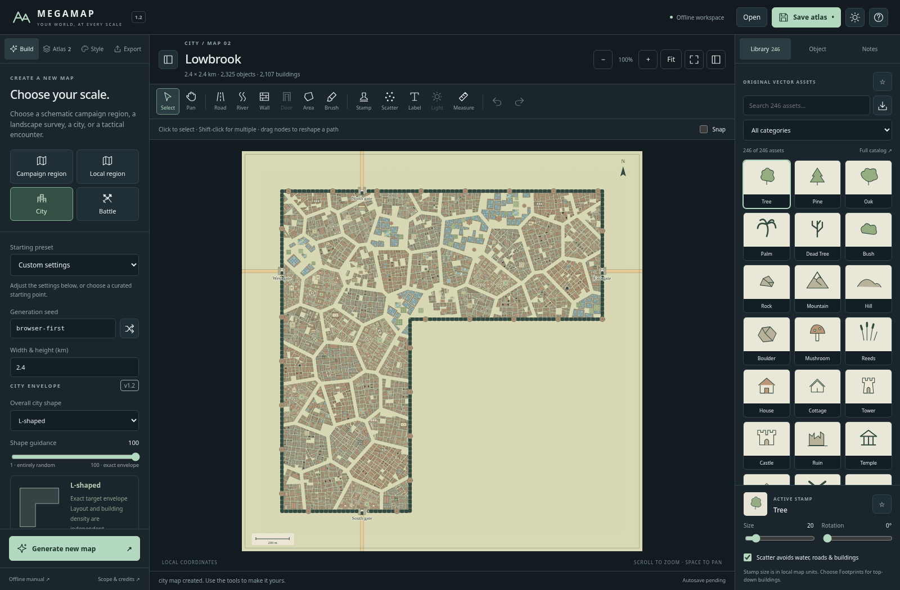
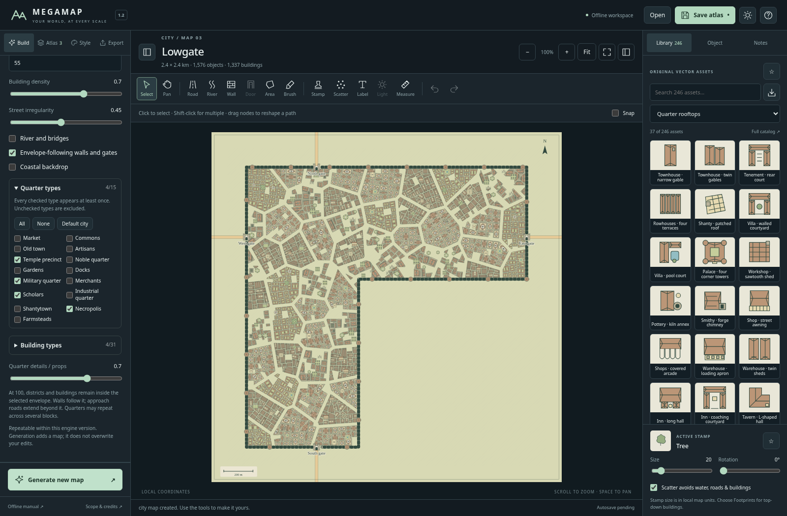
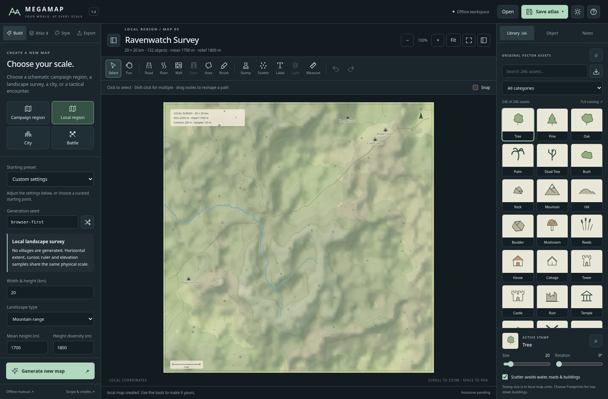
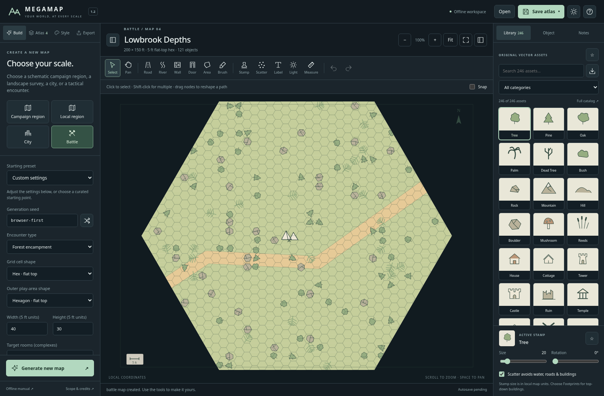
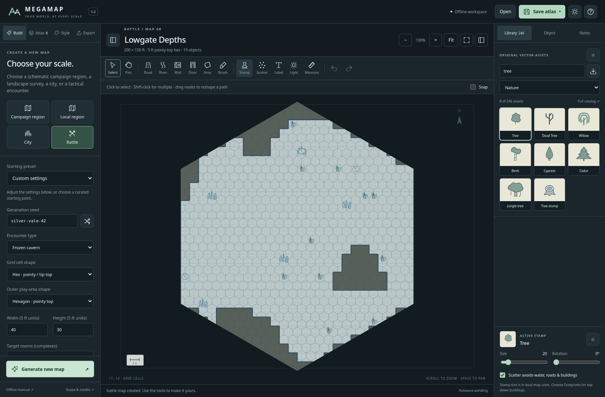
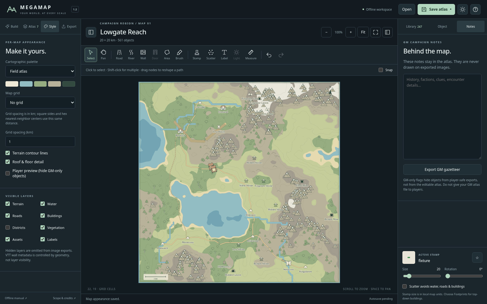

Megamap 1.2 — workbench gallery
These are application screenshots from the documented Chromium inline harness, not mockups. The released application includes the same UI and source. They do not prove native Windows launcher operation.
Guided city envelope
An L-shaped city with shape guidance 100 and quarter-specific rooftop geometry.

Selecting quarter and building programs
A restricted four-quarter city. Roof art follows the building program rather than applying one identical symbol everywhere.

Landscape-first local survey
Metre-based heights, no forced villages, optional trails and cave entrances. Symbols are not measured footprints.

Flat-top hex encounter
The outer hexagonal play area and movement grid can be chosen independently.

Pointy-top cave encounter
Hex movement does not change the orthogonal floor construction. A bounded, connected clipped cave is retained.

Existing campaign-region mode
The schematic campaign generator remains available, separately from Local region.
